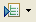

This page describes how to run unit tests on RadRails.
Introduction
RadRails provides several features to help you test your Rails applications. For most of your testing, you will use the Test::Unit View (shown below), which provides feedback about various test runs.
{kind=link}
Instructions
To run a unit test on RadRails:
- Click the Test::Unit tab to open the Test::Unit View. (In the default workbench layout, this tab is located behind or next to the Rails Navigator tab on the left side of the workbench.)
- Run your unit test or group of tests:
- To run a test involving a single file, right-click that test file in the Rails Navigator View or right-click the open file in the Editor and select Run As > Test::Unit Test.
This will automatically run the file as a single unit test.
- To run a batch of a particular type of tests (e.g. unit, functional, or integration), click the arrow to the right of the Run All Tests button  and select the tests that you want to run.
- To run all tests, click the Run All Tests button .
- To run a test involving a single file, right-click that test file in the Rails Navigator View or right-click the open file in the Editor and select Run As > Test::Unit Test.
{kind=link}
RadRails runs the tests that you specified and displays any output in the Console View and in the Test::Unit View.